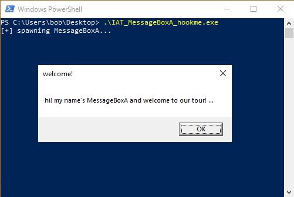
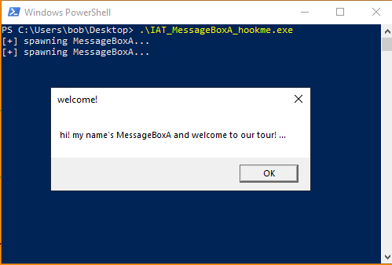
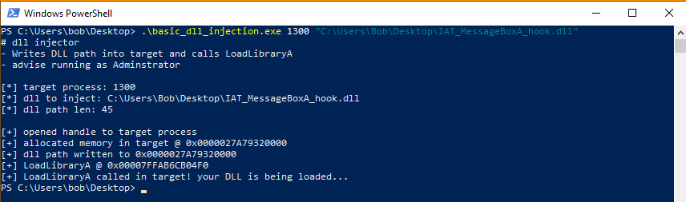
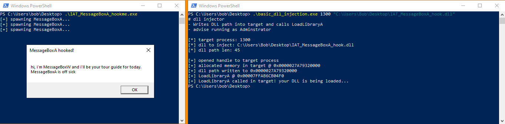
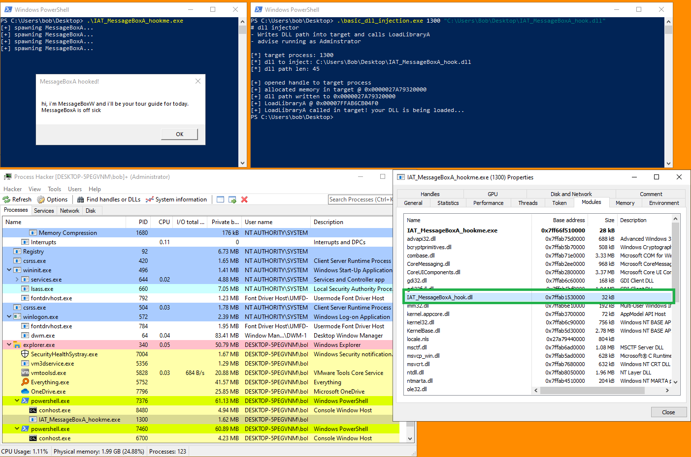

# Demo #2 - Hooking MessageBoxA
This 2nd demo hooks MessageBoxA.
We're running on
Windows 10 2004 19041.630 and all of the code is compiled as x64.
This includes:
• the target program
• the DLL to inject
• the DLL injector
## Setup/Code
My DLL injection code can be found above.
Here's my target program.
It spawns a MessageBox every 3 seconds welcoming the user to our tour.
#include <stdio.h>
#include <Windows.h>
int main(void)
{
while (TRUE)
{
printf("[+] spawning MessageBoxA... \n");
MessageBoxA(NULL, "hi! my name's MessageBoxA and welcome to our tour! ...", "welcome!", MB_OK);
Sleep(3000);
}
return 0;
}
The program won't continue until
OK is pressed.
And here is my IAT hook.
This is a DLL that will be injected into the target process and hook
MessageBoxA.
#include <stdio.h>
#include <Windows.h>
// typedefs of hooked functions
typedef int(__stdcall* t_MessageBoxA)(HWND hWnd, LPCSTR lpText, LPCSTR lpCaption, UINT uType);
t_MessageBoxA og_MessageBoxA;
int hooked_MessageBoxA(HWND hWnd, LPCSTR lpText, LPCSTR lpCaption, UINT uType)
{
MessageBoxW(NULL, L"hi, i'm MessageBoxW and i'll be your tour guide for today. MessageBoxA is off sick", L"MessageBoxA hooked!", MB_OK);
return og_MessageBoxA(hWnd, lpText, lpCaption, uType);
}
void HookFunctionsInIAT(void)
{
LPVOID image_base = NULL;
PIMAGE_DOS_HEADER dos_header = NULL;
PIMAGE_NT_HEADERS pe_header = NULL;
PIMAGE_IMPORT_DESCRIPTOR import_directory = NULL;
PIMAGE_THUNK_DATA import_lookup_table = NULL;
PIMAGE_THUNK_DATA import_address_table = NULL;
PIMAGE_IMPORT_BY_NAME import_name = NULL;
DWORD old_protect = 0;
// grab base address, DOS header, and PE header of host process
image_base = (LPVOID)GetModuleHandleA(NULL);
dos_header = (PIMAGE_DOS_HEADER)image_base;
pe_header = (PIMAGE_NT_HEADERS)((DWORD_PTR)dos_header + (DWORD_PTR)dos_header->e_lfanew);
import_directory = (PIMAGE_IMPORT_DESCRIPTOR)((DWORD_PTR)image_base + pe_header->OptionalHeader.DataDirectory[IMAGE_DIRECTORY_ENTRY_IMPORT].VirtualAddress);
// loop through DLLs in Import Directory
while (import_directory->Name != 0)
{
import_lookup_table = (PIMAGE_THUNK_DATA)((DWORD_PTR)image_base + import_directory->OriginalFirstThunk);
import_address_table = (PIMAGE_THUNK_DATA)((DWORD_PTR)image_base + import_directory->FirstThunk);
// loop through imported functions in DLL
while (import_lookup_table->u1.AddressOfData != 0)
{
// if import by ordinal
if (IMAGE_SNAP_BY_ORDINAL(import_lookup_table->u1.Ordinal))
{
continue;
}
// if import by name
else
{
// grab import name from IMAGE_IMPORT_NAME struct
import_name = (PIMAGE_IMPORT_BY_NAME)((DWORD_PTR)image_base + import_lookup_table->u1.AddressOfData);
// if we've found MessageBoxA
if (strcmp(import_name->Name, "MessageBoxA") == 0)
{
// save the function address
og_MessageBoxA = (t_MessageBoxA)import_address_table->u1.Function;
// make writable the location of the function in the Import Address Table
#ifdef _WIN64
VirtualProtect(&import_address_table->u1.Function, sizeof(ULONGLONG), PAGE_READWRITE, &old_protect);
#else
VirtualProtect(&import_address_table->u1.Function, sizeof(DWORD), PAGE_READWRITE, &old_protect);
#endif
// write address of hooked_MessageBoxA function into IAT
import_address_table->u1.Function = (DWORD_PTR)hooked_MessageBoxA;
// revert Import Address Table back to original state
#ifdef _WIN64
VirtualProtect(&import_address_table->u1.Function, sizeof(ULONGLONG), old_protect, &old_protect);
#else
VirtualProtect(&import_address_table->u1.Function, sizeof(DWORD), old_protect, &old_protect);
#endif
break;
}
}
import_lookup_table++;
import_address_table++;
}
import_directory++;
}
return;
}
BOOL WINAPI DllMain(HINSTANCE hinstDLL, DWORD fdwReason, LPVOID lpReserved)
{
switch (fdwReason)
{
case DLL_PROCESS_ATTACH:
HookFunctionsInIAT();
break;
case DLL_THREAD_ATTACH:
break;
case DLL_THREAD_DETACH:
break;
case DLL_PROCESS_DETACH:
break;
}
return TRUE;
}
## Demo
I run my target program.
MessageBoxA introduces itself and welcomes us on our tour.
Next I inject my MessageBoxA IAT hook in the target process using my injector.
And now, the next MessageBoxA is called in the target process, we get a different message!
Our MessageBoxA hook was successful.
From Process Hacker we can see that our malicious DLL is loaded in the target process.
